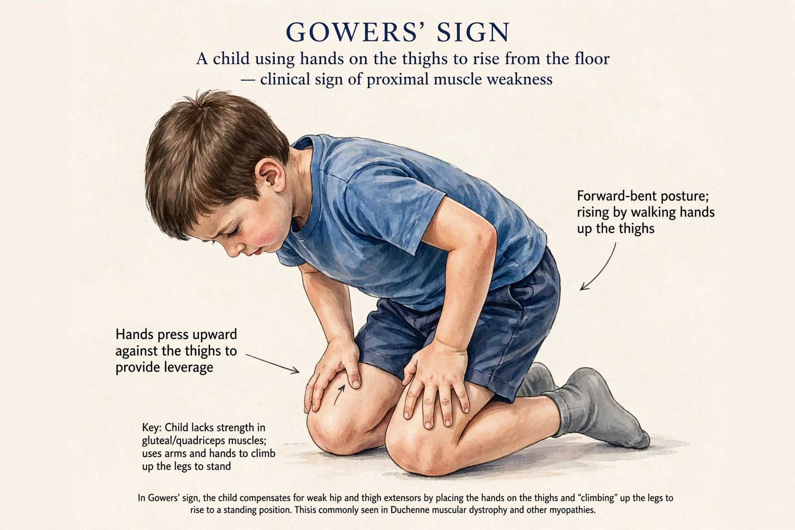

| Muscular dystrophy | |
|---|---|
| Specialty | Neurology, medical genetics, pediatrics |
| Symptoms | Progressive muscle weakness and loss of muscle mass |
| Causes | Genetic mutations affecting muscle proteins |
| Types | Duchenne, Becker, myotonic, limb-girdle, facioscapulohumeral, and others |
Muscular dystrophies (MD) are a genetically and clinically heterogeneous group of rare neuromuscular diseases that cause progressive weakness and breakdown of skeletal muscles over time. The disorders differ by which muscles are affected, the degree of weakness, how fast they worsen, when symptoms appear, and how they are inherited; many people with MD eventually lose the ability to walk, and some forms also affect the heart and lungs.

The most common childhood form, Duchenne muscular dystrophy (DMD), affects about 1 in 3,500–5,000 male births. It is caused by mutations in the dystrophin gene on the X chromosome — one of the largest human genes — and typically presents between ages two and five with delayed walking, frequent falls and calf pseudohypertrophy. Becker muscular dystrophy is a milder allelic condition in which some functional dystrophin is produced. Other major types include myotonic dystrophy (the most common adult form, caused by repeat expansions), facioscapulohumeral dystrophy (linked to the D4Z4 repeat on chromosome 4), the limb-girdle dystrophies, Emery–Dreifuss, oculopharyngeal and the congenital dystrophies.
Diagnosis combines clinical examination, blood tests (creatine kinase is markedly elevated in DMD), genetic testing, and sometimes muscle biopsy. There is no cure; management is multidisciplinary — corticosteroids such as deflazacort slow DMD progression, and cardiac and respiratory support (including non-invasive ventilation) has extended survival into the thirties and beyond. Targeted therapies have begun to appear: exon-skipping drugs such as eteplirsen, antisense treatments, and, in 2023, the first gene therapy for DMD (delandistrogene moxeparvovec, Elevidys) received accelerated FDA approval.
Duchenne muscular dystrophy · Dystrophin · Myotonic dystrophy · Neuromuscular disease